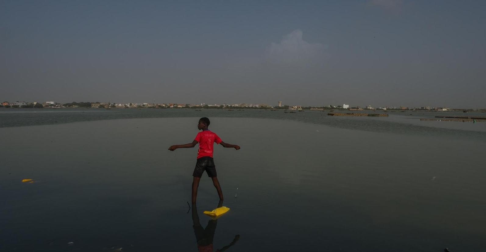
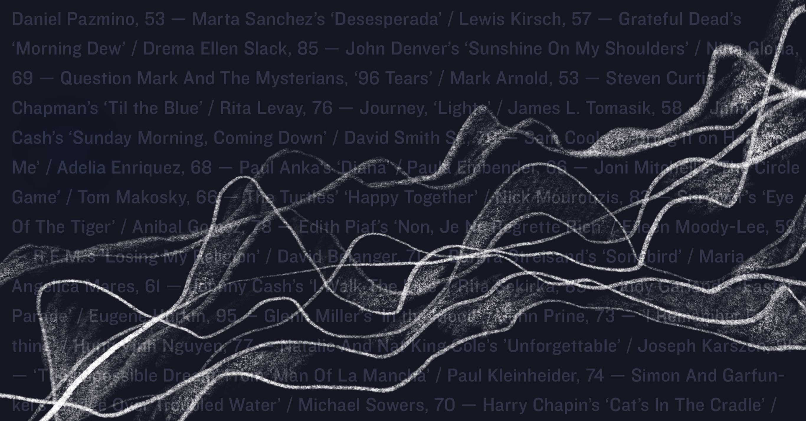
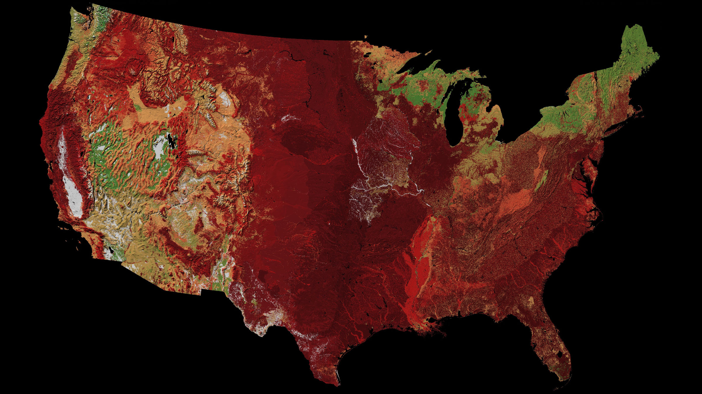
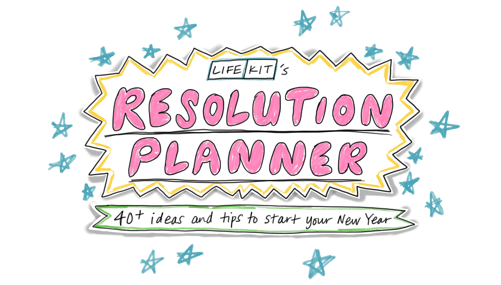

connie hanzhang jin
projects
comics
illustrations
Interactive projects




Original reporting and data visualization/analysis
Bills targeting trans youth are growing more common — and radically reshaping lives
The next round of counting begins in Alaska. Here's how ranked-choice voting works
'I, too, was living a double life': Why trans fans connect to 'The Matrix'
How Biden won: Ramping up the base and expanding margins in the suburbs
Github
Twitter
LinkedIn